This document provides a comprehensive overview of the system architecture for the Signal trading platform, covering the core AI decision-making pipeline, mathematical analysis engine, service-oriented design patterns, and micro-frontend architecture. For detailed information about individual trading components, see Trading Components. For agent system implementation details, see Agent System Reference.
The Signal platform implements a sophisticated three-layer architecture combining AI-driven decision making, mathematical analysis, and distributed frontend components.

The core decision-making system implements a three-stage AI pipeline that mimics professional trader thinking patterns, with each stage serving a specific function in the trading workflow.

Each stage implements adaptive Time-To-Live intervals that adjust based on market conditions and position profitability:
| Stage | TTL Type | Interval | Condition |
|---|---|---|---|
| SignalOutline | BULLISH_TTL |
2.5 minutes | position="long" |
| SignalOutline | BEARISH_TTL |
1.5 minutes | position="short" |
| SignalOutline | NEUTRAL_TTL |
5 minutes | position="wait" |
| CloseOutline | PROFIT_RISING_TTL |
2.5 minutes | Profit growing, price rising |
| CloseOutline | PROFIT_FALLING_TTL |
1.0 minutes | Profit declining, price falling |
| CloseOutline | LOSS_RISING_TTL |
5 minutes | Loss shrinking, price rising |
| CloseOutline | LOSS_FALLING_TTL |
5 minutes | Loss growing, price falling |
| RiskOutline | CHECK_TTL |
15 minutes | Global condition assessment |
The system employs six specialized mathematical services that provide comprehensive technical analysis across multiple timeframes, each optimized for specific trading strategies.

Each mathematical service implements specific indicator configurations optimized for its timeframe and trading strategy:
Short-term Scalping (15-minute candles):
Swing Trading (30-minute candles):
Position Trading (1-hour candles):
The system implements a sophisticated dependency injection container with service-oriented design patterns, ensuring loose coupling and high testability.

The DI container follows a consistent registration pattern for all services:
// Core service registration example
container.bind<SignalLogicService>(TYPES.signalLogicService).to(SignalLogicService);
container.bind<BinanceService>(TYPES.binanceService).to(BinanceService);
container.bind<SettingsConnectionService>(TYPES.settingsConnectionService).to(SettingsConnectionService);
// Math services registration
container.bind<ShortTermMathService>(TYPES.shortTermMathService).to(ShortTermMathService);
container.bind<SwingTermMathService>(TYPES.swingTermMathService).to(SwingTermMathService);
container.bind<LongTermMathService>(TYPES.longTermMathService).to(LongTermMathService);
The platform implements eight independent React applications, each serving specific business functions with autonomous deployment capabilities.

Each micro-frontend serves distinct functional requirements:
| Application | Port | Primary Features | Key Components |
|---|---|---|---|
| about-app | 3000 | System information, project details | About pages, contact info |
| candle-app | 3000 | Candlestick analysis with charts | MainView, CoinView, DataView, lightweight-charts |
| chat-app | 3000 | Multi-agent AI consultation | MainView, Agent Swarm integration |
| kpi-app | 3000 | Trading performance dashboard | MainView, revenue metrics, cryptocurrency-icons |
| news-app | 3000 | Cryptocurrency news aggregation | MainView, CoinView, social signals |
| setup-app | 3000 | System configuration interface | MainView, SetupView, StateView, ExportView |
| signal-app | 3000 | Trading signals management | MainView, signal monitoring |
| strategy-app | 3000 | Strategy analysis and backtesting | MainView, CoinView, performance analysis |
The platform implements a multi-agent AI consultation system with specialized cryptocurrency consultants coordinated through a central triage mechanism.

The system implements sophisticated AI model selection through the InferenceMetaService, supporting multiple providers:
Available AI Providers:
openai/gpt-oss-120b, DeepSeek-R1, DeepSeek-V3grok-3, grok-3-minigpt-oss:120b, deepseek-r1:671b, deepseek-v3:671bThe getActiveInference() method checks Boolean flags in SettingsConnectionService to determine the active model, with automatic fallback to the default model.
The system implements enterprise-grade configuration management with Redis-based storage, feature flags, and sophisticated UI-to-backend mapping.

The system manages three primary configuration categories:
Signal Strength Control (5 levels):
isSignalStrengthMinimal through isSignalStrengthMaximal)SignalCoreService.CHECK_SIGNAL_RANGE_FN validates TP/SL thresholdsAI Behavior Feature Control (6 filters):
LLM Selection Control (8 models):
isInferenceSelection0 through isInferenceSelection7)InferenceMetaService.getActiveInference() provides dynamic model selectionThe system uses a hybrid storage approach with MongoDB for time-series trading data and Redis for configuration and caching.

The architecture demonstrates enterprise-grade design patterns with clear separation of concerns, comprehensive dependency injection, and sophisticated configuration management. The three-stage AI pipeline provides professional-level trading decision making while the micro-frontend architecture ensures maintainable and scalable user interfaces.